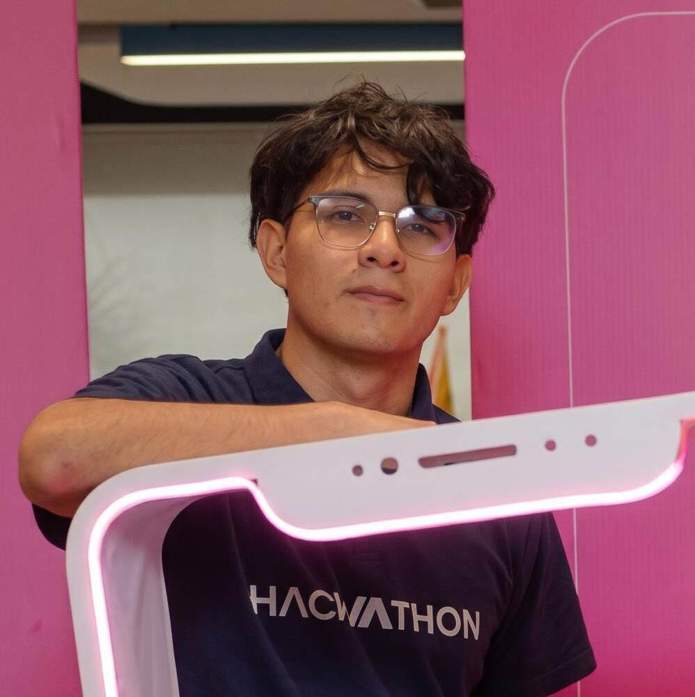

Desarrollo con propósito
Combino desarrollo web y móvil, Internet de las Cosas y fundamentos de ciencia de datos. Disfruto trabajar en equipo, documentar decisiones y aprender durante cada iteración.
Soy Joshua Mero, estudiante de Computación y presidente del club NIoT. Desarrollo soluciones web, móviles e IoT con interés en inteligencia artificial y experiencias digitales útiles.

Me interesa transformar necesidades reales en soluciones claras, desde aplicaciones para comunidades universitarias hasta sistemas embebidos conectados.
Combino desarrollo web y móvil, Internet de las Cosas y fundamentos de ciencia de datos. Disfruto trabajar en equipo, documentar decisiones y aprender durante cada iteración.
La enseñanza también forma parte de mi desarrollo: explicar conceptos con claridad fortalece mi razonamiento matemático y mi capacidad de comunicación.
Apoyo a estudiantes en la comprensión de conceptos, resolución de ejercicios y preparación académica, promoviendo explicaciones paso a paso y un aprendizaje accesible.
Herramientas, frameworks y librerías que aprendí y apliqué durante el curso y en mis proyectos.
Aplicación: estructura, estilos adaptables e interacciones del sitio del Museo Presley Norton y de este portafolio.
Aplicación: interfaces web por componentes, desarrollo rápido y elementos visuales reutilizables en prácticas y prototipos.
Aplicación: tipado de componentes, propiedades y datos para reducir errores en Findyp y Bizly.
Aplicación: construcción y prueba de interfaces móviles multiplataforma para Findyp y Bizly.
Aplicación: autenticación, base de datos y almacenamiento de información e imágenes en aplicaciones colaborativas.
Aplicación: control de versiones, trabajo colaborativo, documentación y despliegue público de este portafolio.
Aplicación: lógica, automatización, análisis de datos y programación de prototipos con ESP32.
Aplicación: integración de sensores, actuadores y comunicaciones en sistemas embebidos conectados.
Trabajo colaborativo enfocado en resolver problemas cotidianos de la comunidad universitaria.
Aplicación multiplataforma para publicar, buscar y recuperar objetos perdidos dentro de comunidades universitarias, con autenticación, reportes, imágenes, filtros y mapas.
Sitio web creado para fomentar la interacción de la comunidad con actividades culturales como las que se realizan en el Museo Presley Norton.
Aplicación móvil y web pensada para estudiantes emprendedores, con una base personalizable para organizar y presentar sus negocios o servicios.
Estoy abierto a colaborar en proyectos universitarios, desarrollo de aplicaciones, IoT e iniciativas de código abierto.